Informe de estado · grupo de investigación
pipeline asistido por agentes
Lucas Costilla · Departamento de Física, FCEN – UBA · [fecha]
Tres conclusiones, antes de los detalles
Contexto
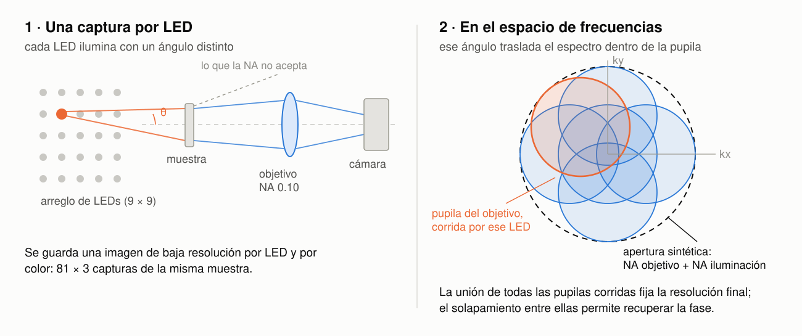
Contexto
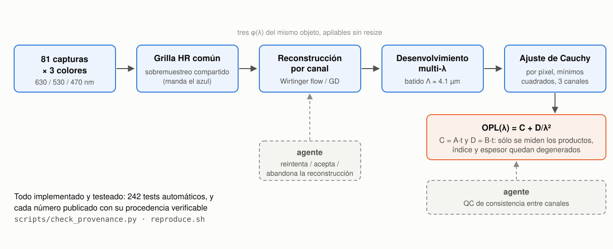
242 tests automáticos; cada número publicado con procedencia verificable (check_provenance.py, reproduce.sh).
Validación sintética
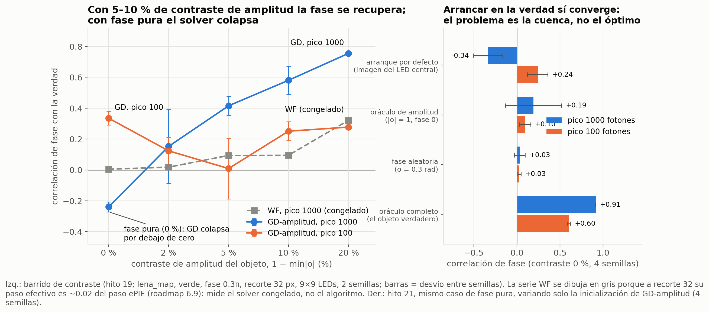
contraste = 1 − mín|A|, con el máximo normalizado a 1.
Validación sintética
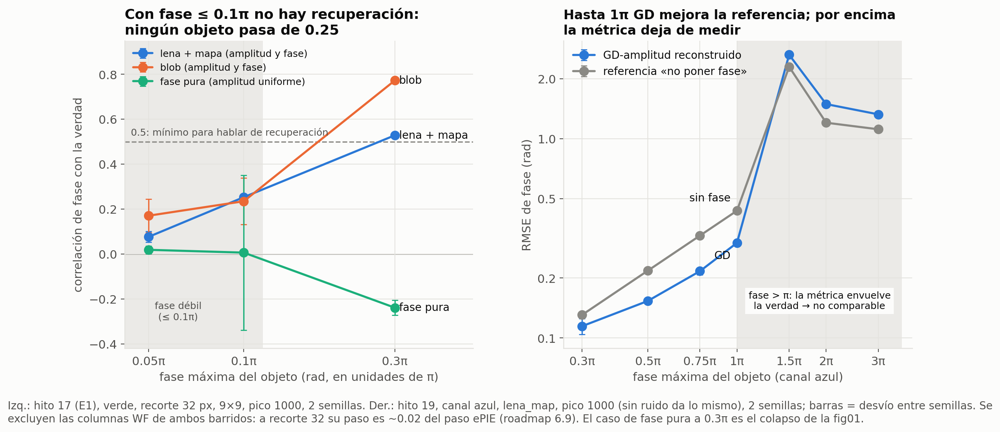
φmax = retardo máximo del objeto; 0.1π ≈ 26 nm de camino óptico a 530 nm.
Validación sintética
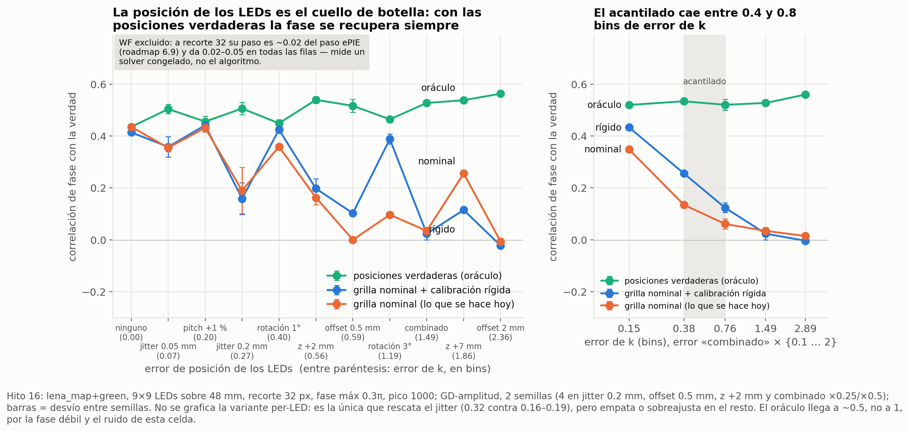
Números de GD-amplitud, no de WF: la columna WF está excluida por el paso congelado (slide 10). 1 bin de error de k = un paso de la grilla de frecuencias; el acantilado cae entre 0.4 y 0.8 bins.
Validación sintética
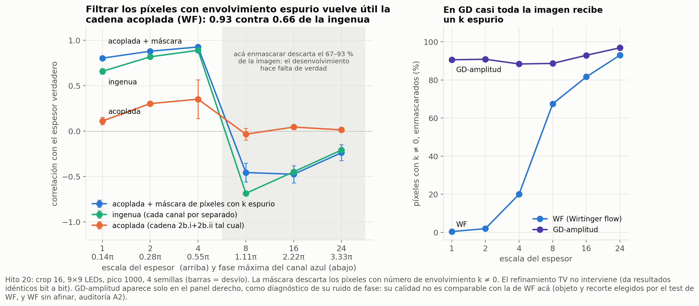
pair_disagreement ya se calcula como confianza por píxel y nadie lo usa.Se mide la correlación del mapa de espesor con el verdadero, no fase ni resolución. Escala del espesor = cuántas veces se agranda la señal de OPL; a escala 8 enmascarar ya tira señal real. El 183x del informe es reducción de error de espesor con fase inyectada, y el Pearson es insensible a escala y offset.
Campaña real · los dos errores de método
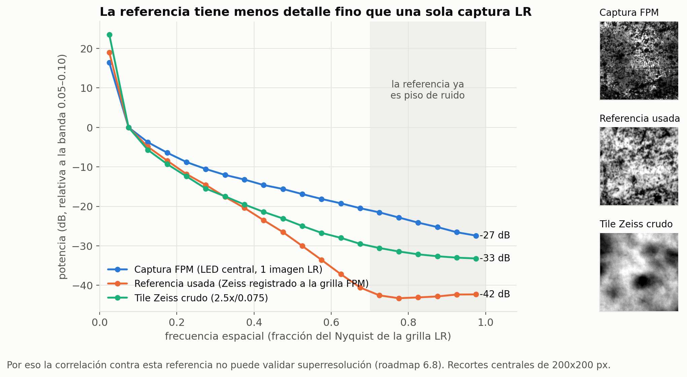
Campaña real · los dos errores de método
convergence_summary no es un proxy confiable de precisión real sobre datos reales.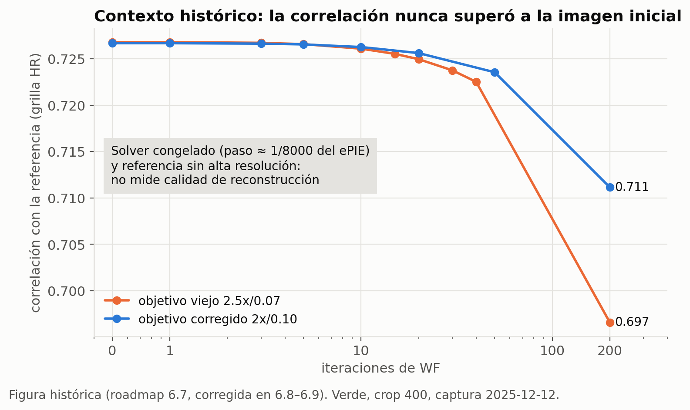
Campaña real · los dos errores de método
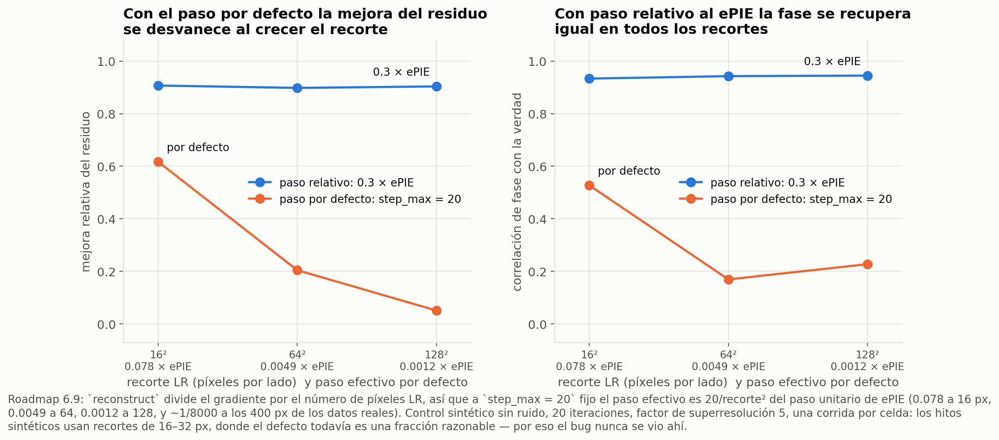
reconstruct divide el gradiente espectral por el número de píxeles LR y usa step_max = 20 fijo: el paso efectivo escala como 20/recorte² del de ePIE — 0.078 a recorte 16, 0.0012 a 128, ~1/8000 a los 400 px de los datos reales.Estado real
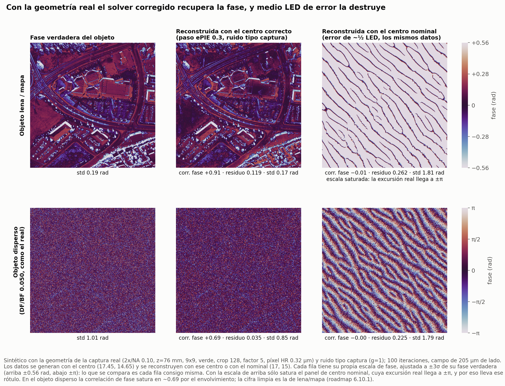
Estado real
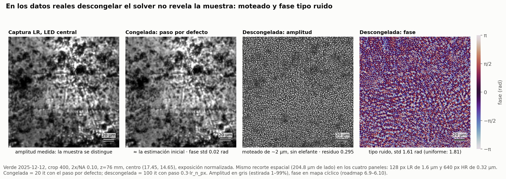
Estado real
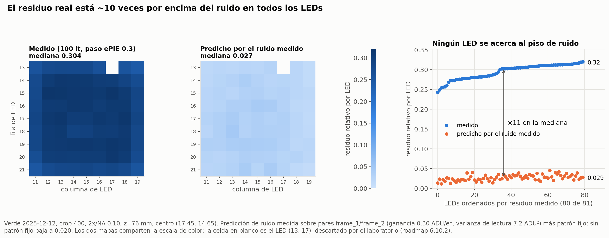
Residuo = media sobre LEDs de ‖estimado − medido‖ / ‖medido‖ en amplitud. Medido: 0.295.
| Candidato | Qué se midió | Veredicto |
|---|---|---|
| Ruido de la cámara | ganancia 0.30 ADU/e⁻, lectura 7.2 ADU², 12 bits → predice 0.02–0.03 | descartado (~11×) |
| Paso del solver | ePIE 0.3 / 0.1 / 0.03 → 0.295 / 0.311 / 0.335 | descartado |
| Campo oscuro | sólo los 9 LEDs internos → 0.267 | descartado |
| Brillo por LED | escala medida/modelo 0.83–0.94, corregida → 0.3098 → 0.3086 | descartado |
| Pupila | EPRY, 30 it → RMS interno −2% | descartado |
Estado real
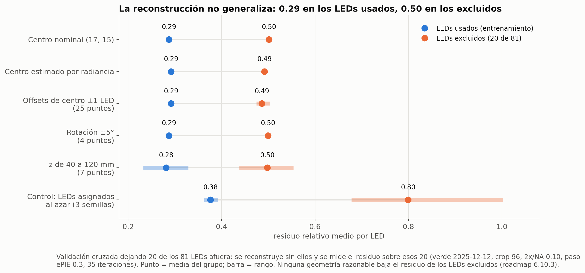
Qué sigue
pair_disagreement para filtrar/ponderar el acople (ya calculado, sin usar).Material de respaldo
Dos figuras que no van en el cuerpo de la charla, para contestar preguntas puntuales: cómo sabemos que el objetivo estaba mal (slide 8) y si se probó mover la geometría (slide 14).
Respaldo · "¿cómo saben que el objetivo estaba mal?"
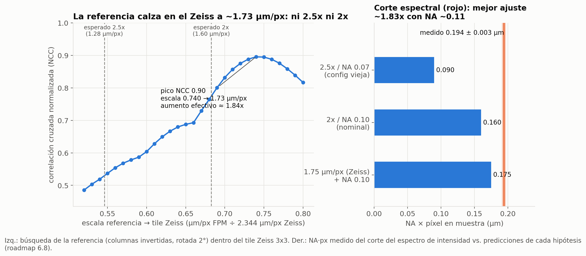
Respaldo · "¿probaron mover la geometría?"
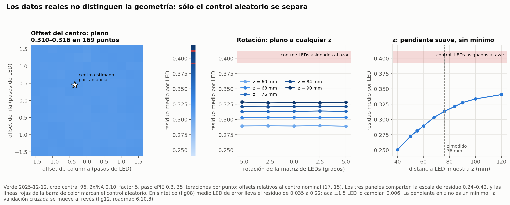